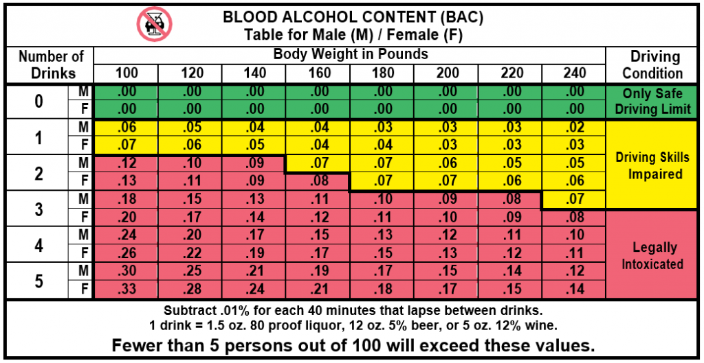

California’s driving under the influence (DUI) laws apply to both alcohol and drugs. It is illegal to drive while under the influence of alcohol or any drug that affects your ability to drive safely. As you age, your tolerance to alcohol decreases, which increases the risk of alcohol-related driving problems. The law does not see a difference between illegal drugs and medications you get from a doctor or pharmacy. They can all affect your ability to drive safely and react to what you see and hear.
No matter what age you are, it is illegal to drive after:
- Drinking excessive amounts of alcohol in any form. This includes medications like cough syrup.
- Taking any drug that affects your ability to drive. This includes prescriptions or over-the-counter medications.
- Using any combination of alcohol or drugs that decreases your ability to drive safely.
Make sure you read medication labels and know the effects of any drug you use. If a law enforcement officer thinks you are driving while under the influence of drugs or alcohol, they have the right to ask you to take a blood or urine test. If you refuse to take one, DMV will suspend or revoke your driving privilege for one year.
Important If you are 13 to 20 years old and convicted of operating a bicycle while under the influence of alcohol or drugs, your driving privilege may be suspended or delayed for one year once you are eligible to drive.
Use or Possession of Alcohol or Cannabis Products in a Vehicle
The law is very strict about carrying alcohol or cannabis products in your vehicle with you. It is illegal to drink any alcohol, to smoke or eat a cannabis product while you are driving or riding as a passenger in a vehicle. If you are carrying any alcohol or cannabis in your vehicle, the container must be sealed and unopened. If it is open, you must keep the container in the trunk or place where passengers do not sit. It is also illegal to keep an open container of alcohol in your glove box. This law does not apply if you are a passenger in a bus, taxi, camper, or motorhome.
Blood Alcohol Concentration (BAC) Limits
When you consume alcohol, traces of it enter your bloodstream. Your BAC measures how much alcohol is present in your bloodstream.
It is illegal for you to drive if you have a BAC of:
- 0.08% or higher if you are over 21 years old.
- 0.01% or higher if you are under 21 years old.
- 0.01% or higher at any age if you are on DUI probation.
- 0.04% or higher if you drive a vehicle that requires a commercial driver’s license.
- 0.04% or higher if you are driving a passenger for hire.
If you drive with an illegal BAC, a law enforcement officer can charge you with DUI. Even if your BAC is below legal limits, that does not mean it is safe for you to drive. Almost everyone feels negative effects of alcohol, even at levels lower than the legal limit. Depending on how badly you are impaired, you may be arrested and convicted of a DUI even without a BAC measurement.
The table below shows BAC estimates based on how many drinks are consumed, gender, and body weight. Remember, even one drink can affect your ability to drive safely.

Note It is illegal to drink alcohol or take drugs when you are operating a boat, jet ski, water skis, aquaplane, or similar vessels. Learn more in the California Harbors and Navigation Code.
DUI Arrests
When you drive in California, you consent to a breath, blood, or urine test if a law enforcement officer suspects you of DUI. If you agreed to take a preliminary alcohol screening (PAS) or breath test, you may still be required to take a blood or urine test to detect the presence of drugs. If you refuse, DMV will suspend or revoke your driving privilege. If you are arrested for DUI:
- California’s Administrative Per Se law requires DMV to suspend your driving privilege.
- The law enforcement officer may take your driver’s license and give you a temporary driver’s license for 30 days.
- You may request a DMV administrative hearing within 10 days from the date of your arrest.
DUI Convictions
If you are convicted of a DUI, DMV will suspend or revoke your driving privilege and you:
- Must complete a DUI program.
- Must file a California Insurance Proof Certificate (SR 22/SR 1P).
- Must pay any applicable license reissue or restriction fees.
- May be required to install an ignition interlock device (IID) on your vehicle.
Here are some additional penalties if you are convicted of DUI:
- You may be sentenced to up to six months in jail.
- You may have to pay a fine.
- Law enforcement may impound your vehicle and you may have to pay a storage fee.
- If you cause serious injury or death while driving under the influence of drugs or alcohol, you may face civil lawsuits.
All DUI convictions remain on your driver’s record for 10 years. If you get any other DUIs during that time, the court or DMV may give you an additional penalty.
Drivers Under 21
If you are under 21 years old, there are additional laws for possessing and consuming alcohol.
Possessing alcohol:
- You may not carry any alcohol beverage inside a vehicle unless an individual who is 21 years old or older is with you. The container must be full, sealed, and unopened. If opened, the alcohol must be kept in the trunk or place where passengers do not sit.
Exception: If you are working for someone with an off-site liquor sales license, you may carry alcoholic beverages in closed containers. - If you are caught with alcohol in your vehicle, law enforcement can impound your vehicle for up to 30 days. The court may fine you and suspend your driver’s license for one year. If you do not already have a driver’s license, the court may ask DMV to delay giving you your first driver’s license for up to one year.
Consuming alcohol:
- If a law enforcement officer suspects you of consuming alcohol, they can require you to take a hand-held breath test, PAS, or another chemical test.
- If you are convicted of a DUI with a BAC of 0.01% or higher, DMV may revoke your driving privilege for one year. You must also complete a licensed DUI program.
- If your PAS shows a BAC of 0.05% or higher, the officer may require you to take a breath or blood test.
- If a later test shows you have a BAC of 0.05% or higher, you may be arrested for a DUI and your driving privilege may be suspended.